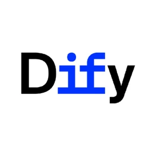

01
Le chatbot de ton site
Tu glisses ton livret d'accueil, ta FAQ ou ton catalogue, tu publies, et une bulle de chat répond à tes visiteurs jour et nuit, avec tes infos.
Tes documents→Publier→Bulle sur ton site

Tu relies des blocs, tu choisis ton IA, tu lui donnes tes documents, et tu publies ton propre assistant : en lien, ou en bulle de chat sur ton site.

Dify est une plateforme pour fabriquer des applis d'IA sans coder : un chatbot, un assistant qui répond avec tes documents (base de connaissances), un workflow ou un agent qui utilise des outils. Tu relies des blocs à l'écran, tu choisis le modèle (ChatGPT, Claude, Gemini, Mistral… ou un modèle local avec Ollama), puis tu publies : un lien à partager, une bulle de chat ou un cadre à coller dans ton site, et une API pour tes autres outils. La différence avec Open WebUI (vidéo n°31) : Open WebUI sert à discuter avec l'IA pour toi ; Dify sert à construire un assistant pour les autres. Et avec n8n (vidéo n°29) : n8n automatise des tâches entre tes applis ; Dify fabrique l'appli d'IA elle-même.
git clone https://github.com/langgenius/dify, puis dans dify/docker : cp .env.example .env et docker compose up -d. Ouvre ensuite http://localhost/install pour créer le compte administrateur. Il faut Docker Compose 2.24 ou plus, 2 cœurs et 4 Go de RAM au minimum.
RecommandéPour qu'une bulle de chat réponde aux visiteurs de ton site, Dify doit être joignable depuis Internet : installe-le sur un serveur ou un VPS, avec un nom de domaine et HTTPS (reverse proxy), et garde-le à jour.
Un peu techniqueHébergé par Dify, rien à installer. Sandbox gratuit (200 crédits de messages au total, 5 applis) ; Professional 59 $ par mois (590 $ par an) pour 5 000 crédits par mois et 50 applis ; Team 159 $ par mois.
PayantTu glisses ton livret d'accueil, ta FAQ ou ton catalogue, tu publies, et une bulle de chat répond à tes visiteurs jour et nuit, avec tes infos.
Horaires, livraison, retours, garanties : l'assistant répond à partir de tes pages, et tu relis l'historique des conversations pour améliorer les réponses.
Procédures, notes internes, documentation technique : chacun pose sa question en langage courant au lieu de fouiller les dossiers.
Un workflow résume, traduit ou classe chaque document que tu lui envoies, et renvoie le résultat dans le format que tu veux.
Donne à ton assistant des outils (recherche web, API, serveurs MCP, plugins) pour qu'il aille chercher l'info ou agisse, dans un cadre que tu contrôles.
Lancé en 2023 par la société LangGenius, Dify dépasse 150 000 étoiles sur GitHub (environ 159 700 en novembre 2026) et 25 000 forks. Selon une étude de cas publiée par AWS, Dify Cloud compte plus de 600 000 utilisateurs inscrits et plus d'un million d'applis publiées. ETS, l'organisme qui crée le TOEIC et le TOEFL, a bâti sa plateforme d'IA interne sur Dify Enterprise : environ 2 000 salariés, plus de 50 applis en production, gérées par une équipe de 12 personnes. La société a levé 30 millions de dollars en mars 2026.
Nouvelles versions plusieurs fois par mois (1.15 en juin 2026, 1.17 en août 2026), plus de 14 000 commits et une équipe salariée.
Environ 159 700 étoiles et 25 000 forks sur GitHub, une place de marché de plugins, une documentation traduite en plusieurs langues.
Installé chez toi, tes applis et documents restent sur ta machine ; mais les questions partent chez le fournisseur du modèle, sauf si tu utilises un modèle local.
Société financée (Cloud et édition Enterprise payants) ; licence basée sur Apache 2.0 mais avec deux conditions, donc pas totalement libre.
Trois ans d'existence, version 1.x stable, de grandes organisations en production ; plusieurs correctifs de sécurité en 2026, à suivre.
Comment on note : 5 critères notés sur 5, vérifiés sur GitHub, la licence, la documentation officielle, la page des tarifs, les études de cas de Dify et d'AWS le 16 novembre 2026. La note sur 10 est la moyenne ramenée sur 10.
Bon pour : Construire et publier tes propres assistants, workflows et agents, avec l'IA de ton choix
Bon pour : Un chatbot de site prêt en quelques minutes, sans rien héberger
Bon pour : Les entreprises déjà équipées de Microsoft 365
Bon pour : Discuter avec l'IA et tes documents pour toi seul, pas publier un assistant
L'IA qui répond n'est jamais infaillible : relis régulièrement l'historique des conversations, et indique à tes visiteurs qu'ils parlent à un assistant automatique.

Chaque vidéo RepoPop t'explique un dépôt GitHub utile en moins d'une minute, avec son kit comme celui-ci.